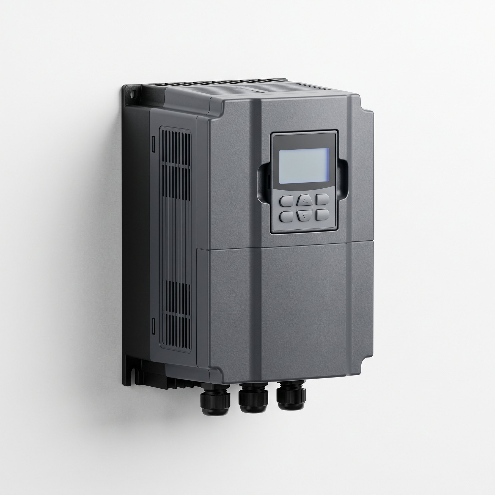

Fig. 02 — HVAC Variable Frequency Drive
인버터 제어반의 심장은 인버터입니다. 오닉스는 7개 제조사의 HVAC 전용 인버터를 취급하며, 현장 조건에 맞는 플랫폼을 선정해 외함·보호회로·통신·제어 로직을 설계합니다.
인버터 제어반 공통 사양
사양은 선택이 아니라
현장의 조건입니다.
전원
3Φ 380 V (440 V 대응) · 50/60 Hz · 주회로 MCCB · 서지보호기(SPD)
외함
스틸 1.6–2.0 t 분체도장 · SUS304 옵션 · 옥내 IP20–IP41 / 옥외 IP54 · 자립형·벽부형
운전 모드
자동 / 수동 / 바이패스 전환 · 현장 / 원격(BMS) 선택 · 비상 정지
제어
PID(온도·압력·차압·유량 4–20 mA) · 다단속 · 슬립/웨이크 · 화재 모드 강제 운전
복합제어반
공조기 팬 인버터 + 전기 히터 제어(SCR·접촉기 단계 제어) 일체형 구성 · 히터 과열·풍량 인터록
통신
Modbus RTU 기본 · BACnet MS/TP · BACnet/IP · LonWorks · Ethernet 옵션
표시
도어 마운트 키패드 · 운전/고장/바이패스 램프 · 디지털 전력계 옵션
보호
과전류 · 과전압 · 저전압 · 과열 · 결상 · 지락 · 모터 과부하 · 입/출력 리액터 옵션
기준
KS C IEC 61439 저압 배전반 기준 설계 · KC 인증 인버터 적용
취급 인버터 플랫폼
일곱 제조사. 하나의 기준.
적용 가능 시설
데이터센터오피스 빌딩병원·의료시설백화점·대형마트철도·지하 인프라
호텔학교·도서관관공서제조공장물류센터발전소·에너지 시설아파트 단지주차장상가
모터 구동 설비가 있는 모든 건축물과 산업 현장이 대상이며, 전국 어디든 방문 진단합니다.